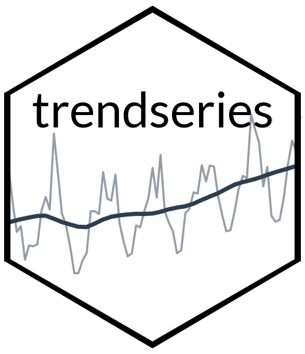

Changelog
Source:NEWS.md
trendseries 1.0.0
Release Date: January 2025
First Production Release
This is the first production release of trendseries, providing a modern, pipe-friendly interface for extracting trends from economic time series data.
Key Features
-
21 Trend Extraction Methods:
- Econometric filters: HP filter (one-sided and two-sided), Baxter-King, Christiano-Fitzgerald, Hamilton filter, Beveridge-Nelson decomposition, Unobserved Components Model (UCM)
- Moving averages: Simple (SMA), Weighted (WMA), Exponential (EWMA), Zero-lag (ZLEMA), Triangular, Median, Gaussian-weighted
- Smoothing methods: STL decomposition, Loess, Splines, Polynomial trends, Simple/Double exponential smoothing
- Signal processing: Kalman filter/smoother, Savitzky-Golay, Butterworth, Kernel smoother
-
Two-Function API:
-
augment_trends(): Pipe-friendly function for tibble/data.frame workflows with grouped operations -
extract_trends(): Direct time series analysis for ts/xts/zoo objects
-
Unified Parameter System: Consistent interface with
window,smoothing,band,align, andparamsparameters across all methods-
Smart Economic Defaults:
- HP filter: λ=1600 (quarterly), λ=14400 (monthly)
- Moving averages: Frequency-appropriate windows (4 quarters, 12 months)
- Bandpass filters: 6-32 quarter business cycle range
-
Performance Optimizations:
- C++ implementations via RcppRoll for fast rolling statistics
- Optimized exponential smoothing with automatic parameter selection
- Efficient signal processing filters
Major Improvements
- Mathematical Correctness: All 21 methods validated for theoretical accuracy and proper implementation
- EWMA Dual Interface: Support for both window-based (TTR optimization) and alpha-based (traditional formula) approaches
-
One-sided HP Filter: Real-time analysis support with
hp_onesided=TRUEparameter for nowcasting and policy analysis - Align Parameter: Flexible positioning for moving averages (left/center/right) enabling causal and anti-causal filters
-
Modern R Patterns: Native pipe
|>, cli messaging, comprehensive error handling - Scale Invariance: Kernel smoother with theoretically sound bandwidth selection
- Robust Error Handling: Informative messages with actionable suggestions using cli package
Quality Metrics
- R CMD check: 0 errors | 0 warnings | 0 notes (perfect score)
- Test suite: 317 passing tests across 9 test files
- Documentation: All examples verified working
- Code quality: No duplicates, modern patterns, clean dependencies
Included Datasets
The package includes 10 economic datasets for examples and testing:
-
Brazilian data (BCB):
gdp_construction,ibcbr,vehicles,oil_derivatives,electric -
UK data (ONS):
retail_households,retail_autofuel -
Coffee prices (CEPEA):
coffee_arabica,coffee_robusta(daily data) -
Metadata:
series_metadata
Package Scope
Optimized for monthly (frequency=12) and quarterly (frequency=4) economic data, with smart defaults tailored for business cycle analysis. Methods like STL and moving averages also support daily and other frequencies.
Technical Details
- Minimum R version: 4.1.0
- Dependencies: mFilter, hpfilter, RcppRoll, forecast, dlm, signal, tsbox, cli, lubridate, tibble
- License: MIT
- Repository: https://github.com/viniciusoike/trendseries
- Website: https://viniciusoike.github.io/trendseries/